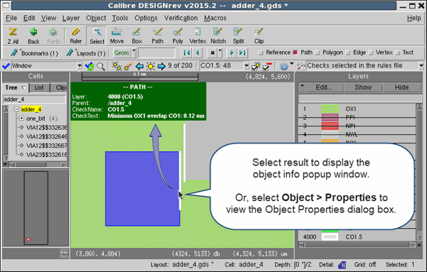

Result tooltips
include the layer information, check name, check text, and optionally
the check definition.
Procedure
- Enable the object info popup
window in Calibre DESIGNrev as follows:
- Select Options > Objects to open the
Preferences dialog box to the Objects tab.
- Enable “Show object info popup
window.”
- Click OK to
close the Preferences dialog box.
- (Optional) To include the
full check definition in the tooltip, do the following:
- Click the down arrow () in the Calibre RealTime
integrated toolbar to open the DRC Run and Highlight Options menu.
- Enable “Include Check Definition
in Tool Tip.”
- Run Calibre RealTime as described
in “Running Calibre RealTime in Window, Area, or Cell Mode with Calibre DESIGNrev” or “Running Calibre RealTime in Run on Edit Mode with Calibre DESIGNrev”.
Note:
If you changed the setting of “Include Check Definition in Tool
Tip” in Step 2, then it is necessary to rerun
Calibre RealTime for the new setting to take effect.
- Use the highlight controls
( ) to highlight a result.
- Click a result highlight to
select it—the object info popup window is displayed in the upper
left of the layout window, as shown in the following figure.
Figure 1. Result Tooltip in
Calibre RealTime with Calibre DESIGNrev
You can also select Object > Properties while a
result highlight is selected to view the result information in the
Object Properties dialog box. This method for viewing object properties
does not depend on the setting of “Show object info popup window”
in the Objects tab of the Preferences dialog box.